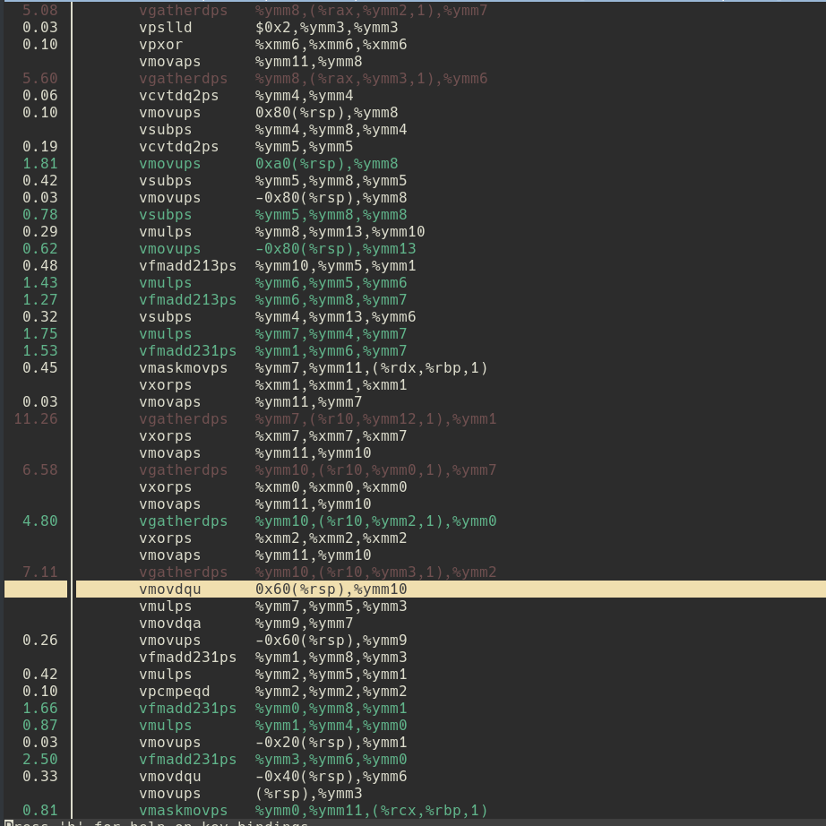
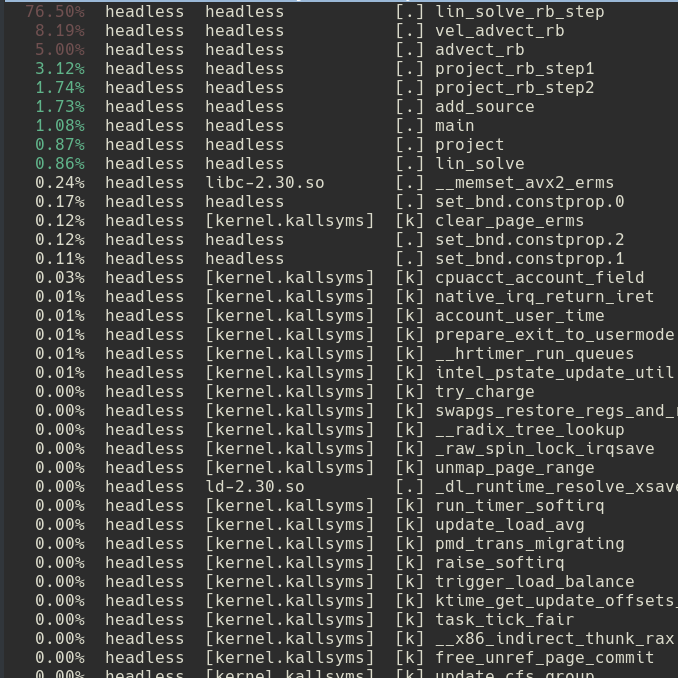
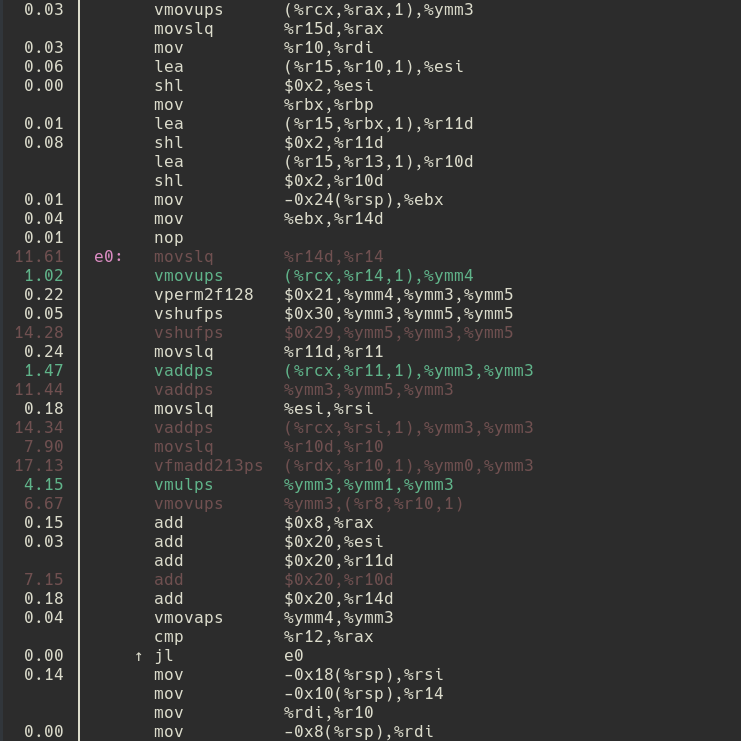

class: center, middle # Lab 2 - Vectorization Parallel Computing Mateo de Mayo - Benjamín Ocampo --- class: center, middle # Lab 1, redblack and our baseline --- # Lab 1 Recalling the first laboratory, the maximum perfomance we got: <div align="center"> </div> --- # Some last sequencial optimizations Function *advect* is called twice in order to perform the function *vel_step*. Both of them called with u0 and v0 as parameters. ```c void vel_step(unsigned int n, float *u, float *v, float *u0, float *v0, float visc, float dt) { ... SWAP(u0, u); SWAP(v0, v); advect(n, VERTICAL, u, u0, u0, v0, dt); advect(n, HORIZONTAL, v, v0, u0, v0, dt); ... } ``` --- # Some last sequencial optimizations If we get into the definition of advect: ```c static void advect(unsigned int n, boundary b, float *d, const float *d0, const float *u0, const float *v0, float dt) { int i0, i1, j0, j1; float x, y, s0, t0, s1, t1; float dt0 = dt * n; for (unsigned int i = 1; i <= n; i++) { for (unsigned int j = 1; j <= n; j++) { x = i - dt0 * u0[IX(i, j)]; y = j - dt0 * v0[IX(i, j)]; ... // compute i0, i1, j0, j1 by means of x and y. ... d[IX(i, j)] = s0 * (t0 * d0[IX(i0, j0)] + t1 * d0[IX(i0, j1)]) + s1 * (t0 * d0[IX(i1, j0)] + t1 * d0[IX(i1, j1)]); ``` *u0* and *v0* will be used to compute indexes *i0*, *i1*, *j0* and *j1* in order to update the array *d*. *x* an *y* are computed twice! --- # Before getting covered in mud By means of coz profiler and perf we decided where to put focus on. They revealed that the performance was taken by the function IX in the functions *advect* and *project*. <div align="center"> </div> --- # Before getting covered in mud By means of coz profiler and perf we decided where to put focus on. They revealed that the performance was taken by the function IX in the functions *advect* and *project*. <div align="center"> </div> --- # Before getting covered in mud By means of coz profiler and perf we decided where to put focus on. They revealed that the performance was taken by the function IX in the functions *advect* and *project*. <div align="center"> </div> --- # Before getting covered in mud In order to take advantage of *red-black* approach and its profits, the **solver.c** file was re-written Functions **advect** and **project** were re-written and the two expensive advect calls were changed to just one function call which updates *u* and *v*. --- ```c static void advect(unsigned int n, boundary b, float *d, const float *d0, const float *u, const float *v, float dt) { ... advect_rb(RED, n, redd, d0, redu, redv, dt); advect_rb(BLACK, n, blkd, d0, blku, blkv, dt); set_bnd(n, b, d); } ``` ```c static void advect_rb(grid_color color, unsigned int n, float *samed, const float *d0, const float *sameu, const float *samev, float dt) { ... for (unsigned int i = 1; i <= n; i++, shift = -shift, start = 1 - start) { for (unsigned int j = start; j < width - (1 - start); j++) { ... x = gridj - dt0 * sameu[index]; y = gridi - dt0 * samev[index]; ... // lots of computations to get i0j0, j1j0, j0j1, j1j1 samed[index] = s0 * (t0 * d0[i0j0] + t1 * d0[i1j0]) + s1 * (t0 * d0[i0j1] + t1 * d0[i1j1]); } } } ``` --- ```c static void vel_advect(unsigned int n, float *restrict u, float *restrict v, const float *restrict u0, const float *restrict v0, float dt) { vel_advect_rb(RED, n, redu, redv, redu0, redv0, u0, v0, dt); vel_advect_rb(BLACK, n, blku, blkv, blku0, blkv0, u0, v0, dt); set_bnd(n, VERTICAL, u); set_bnd(n, HORIZONTAL, v); } ``` ```c static void vel_advect_rb(grid_color color, unsigned int n, float *restrict sameu, float *restrict samev, const float *sameu0, const float *samev0, const float *u0, const float *v0, float dt) { for (unsigned int i = 1; i <= n; i++, shift = -shift, start = 1 - start) { for (unsigned int j = start; j < width - (1 - start); j++) { ... x = gridj - dt0 * sameu0[index]; y = gridi - dt0 * samev0[index]; ... // lots of computations to get i0j0, j1j0, j0j1, j1j1 sameu[index] = s0 * (t0 * u0[i0j0] + t1 * u0[i1j0]) + s1 * (t0 * u0[i0j1] + t1 * u0[i1j1]); samev[index] = s0 * (t0 * v0[i0j0] + t1 * v0[i1j0]) + s1 * (t0 * v0[i0j1] + t1 * v0[i1j1]); } } } ``` --- ```c static void project(unsigned int n, float *u, float *v, float *u0, float *v0) { project_rb_step1(n, RED, redu0, redv0, blku, blkv); project_rb_step1(n, BLACK, blku0, blkv0, redu, redv); lin_solve(n, NONE, u0, v0, 1, 4); project_rb_step2(n, RED, redu, redv, blku0); project_rb_step2(n, BLACK, blku, blkv, redu0); } ``` ```c static void project_rb_step1(unsigned int n, grid_color color, float *sameu0, float *samev0, float *neighu, float *neighv) { for (unsigned int i = 1; i <= n; ++i, start = 1 - start) for (unsigned int j = start; j < width - (1 - start); ++j) { int index = idx(j, i, width); samev0[index] = constant * (neighu[r] - neighu[l] + neighv[d] - neighv[u]); sameu0[index] = 0; } } ``` ```c static void project_rb_step2(unsigned int n, grid_color color, float *sameu, float *samev, float *neighu0) { for (unsigned int i = 1; i <= n; ++i, start = 1 - start) for (unsigned int j = start; j < width - (1 - start); ++j) { int index = idx(j, i, width); sameu[index] -= constant * (neighu0[r] - neighu0[l]); samev[index] -= constant * (neighu0[u] - neighu0[d]); } } ``` --- <div align="center"> <h3>rb vs baseline</h3> </div> Comparison between the red-black code given at the beggining of the lab and new red-black version was called *baseline* on account of our new starting point. <div align="center"> <img src="ispc_graphs/nspcellgraph__rb __vs__baseline .png" alt="drawing" style="width:550px;"/> </div> --- <div align="center"> <img src="ispc_graphs/l1graph__rb __vs__baseline .png" alt="drawing" style="width:430px;"/> <img src="ispc_graphs/llcgraph__rb __vs__baseline .png" alt="drawing" style="width:430px;"/> </div> --- <div align="center"> <h3>lab1 vs baseline</h3> </div> <div align="center"> <img src="ispc_graphs/nspcellgraph__lab1 __vs__baseline .png" alt="drawing" style="width:550px;"/> </div> --- <div align="center"> <img src="ispc_graphs/l1graph__lab1 __vs__baseline .png" alt="drawing" style="width:430px;"/> <img src="ispc_graphs/llcgraph__lab1 __vs__baseline .png" alt="drawing" style="width:430px;"/> </div> --- # Different Paths: Instrinsics and ISPC Up to this point we needed to take different paths, one of us worked with *intrinsics* and the other one with *ispc*. Both of us tried to take the same approaches in order to compare how much performance we got with different paths. --- class: center, middle # linsolve --- # linsolve - ISPC ```c export void lin_solve_rb_step( ... ) { ... for (uniform int y = 1; y <= n; y++, shift = -shift, start = 1 - start) { uniform int x; for (x = start; x < width - programCount; x+= programCount) { varying int index = (x + programIndex) + y * width; same[index] = (same0[index] + a * (neigh[index - width] + neigh[index - start] + neigh[index - start + 1] + neigh[index + width])) * invc; } varying int xx = programIndex + x; if(xx < width - (1 - start)){ varying int index = xx + y * width; ... // Repeat the statements as above. } } ``` Ideas: - Loop iterators as uniform values (Avoid the use of vmaskmovps). - Another possibility: use of *cfor* clauses. --- <div align="center"> <h3>baseline vs linsolve (ispc)</h3> </div> <div align="center"> <img src="ispc_graphs/nspcellgraph__baseline __vs__linsolve .png" alt="drawing" style="width:550px;"/> </div> --- <div align="center"> <img src="ispc_graphs/l1graph__baseline __vs__linsolve .png" alt="drawing" style="width:430px;"/> <img src="ispc_graphs/llcgraph__baseline __vs__linsolve .png" alt="drawing" style="width:430px;"/> </div> --- # linsolve - intrinsics ```c static void lin_solve_rb_step(...) { const __m256 pinvc = fset1(invc); const __m256 pa = fset1(a); for (unsigned int y = 1; y <= n; ++y, start = 1 - start) for (unsigned int x = start; x < width - (1 - start); x += 8) { int index = idx(x, y, width); __m256 f = fload2x4(&same0[index]); __m256 u = fload2x4(&neigh[up]); __m256 r = fload2x4(&neigh[right]); __m256 d = fload2x4(&neigh[down]); __m256 l = fload2x4(&neigh[left]); __m256 t = fmul(ffmadd(pa, fadd(u, fadd(r, fadd(d, l))), f), pinvc); fstoreu(&same[index], t); } } ``` Ideas: - `fload2x4` (intel optimization manual (14.6.2), prior to skylake) - Delayed iterations: how imprecise can we go? - `float16`: on IA-64 only support for conversion `vcvtps2ph` and `vcvtph2ps` - Aligned memory. More on this with `stream` --- <div align="center"> <h3>baseline vs linsolve (intrinsics)</h3> </div> <div align="center"> <img src="intrinsics_graphs/nspcellgraph__baseline __vs__linsolve .png" alt="drawing" style="width:550px;"/> </div> --- <div align="center"> <img src="intrinsics_graphs/l1graph__baseline __vs__linsolve .png" alt="drawing" style="width:430px;"/> <img src="intrinsics_graphs/llcgraph__baseline __vs__linsolve .png" alt="drawing" style="width:430px;"/> </div> --- class: center, middle # advect --- # advect - ISPC ```c export void vel_advect_rb( ... ) { ... uniform float dt0 = dt * n; for (uniform int i = 1; i <= n; i++, shift = -shift, start = 1 - start){ for (varying int j = programIndex + start; j < width - (1 - start); j += programCount){ ... varying int index = j + i * width; varying int gridi = i; varying int gridj = 2 * j + shift + start; x = gridj - dt0 * sameu0[index]; y = gridi - dt0 * samev0[index]; x = clamp(x, 0.5f, n + 0.5f); y = clamp(y, 0.5f, n + 0.5f); ... sameu[index] = s0 * (t0 * u0[idx(j0, i0, n + 2)] + t1 * u0[idx(j0, i1, n + 2)]) + s1 * (t0 * u0[idx(j1, i0, n + 2)] + t1 * u0[idx(j1, i1, n + 2)]); samev[index] = s0 * (t0 * v0[idx(j0, i0, n + 2)] + t1 * v0[idx(j0, i1, n + 2)]) + s1 * (t0 * v0[idx(j1, i0, n + 2)] + t1 * v0[idx(j1, i1, n + 2)]); } } } ``` --- # advect - ISPC ```c export void advect_rb( ... ){ ... for (uniform int i = 1; i <= n; i++, shift = -shift, start = 1 - start){ for (varying int j = programIndex + start; j < width - (1 - start); j += programCount){ ... varying int index = j + i * width; varying int gridi = i; varying int gridj = 2 * j + shift + start; x = gridj - dt0 * sameu[index]; y = gridi - dt0 * samev[index]; x = clamp(x, 0.5f, n + 0.5f); y = clamp(y, 0.5f, n + 0.5f); ... samed[index] = s0 * (t0 * d0[idx(j0, i0, n + 2)] + t1 * d0[idx(j0, i1, n + 2)]) + s1 * (t0 * d0[idx(j1, i0, n + 2)] + t1 * d0[idx(j1, i1, n + 2)]); } } } ``` --- <div align="center"> <h3> linsolve vs advect (ispc)</h3> </div> <div align="center"> <img src="ispc_graphs/nspcellgraph__linsolve __vs__advect .png" alt="drawing" style="width:550px;"/> </div> --- <div align="center"> <img src="ispc_graphs/l1graph__linsolve __vs__advect .png" alt="drawing" style="width:430px;"/> <img src="ispc_graphs/llcgraph__linsolve __vs__advect .png" alt="drawing" style="width:430px;"/> </div> --- # advect - intrinsics - very long and difficult to read code, the same is expressed in 4x size. - Debugging edge cases is hard, debugging vectorized edge cases is harder. - `_mm256_mul_ps` multiplies 8 floats. What `_mm256_mul_epi32` does? - `_mm256_cvtps_epi32` are not C casts --- <div align="center"> <h3> linsolve vs advect (intrinsics)</h3> </div> <div align="center"> <img src="intrinsics_graphs/nspcellgraph__linsolve __vs__advect .png" alt="drawing" style="width:550px;"/> </div> --- <div align="center"> <img src="intrinsics_graphs/l1graph__linsolve __vs__advect .png" alt="drawing" style="width:430px;"/> <img src="intrinsics_graphs/llcgraph__linsolve __vs__advect .png" alt="drawing" style="width:430px;"/> </div> --- # We got an improvement! Nevertheless... <div align="center">  </div> --- class: center, middle # project --- # project Not much to say, straightforward vectorization. On one hand, using `fload2x4` in the case of intrinsics. On the other hand, by means of *programIndex* and stopping an iteration before to avoid de use of *masks.* --- <div align="center"> <h3> advect vs project (ispc)</h3> </div> <div align="center"> <img src="ispc_graphs/nspcellgraph__advect __vs__project .png" alt="drawing" style="width:550px;"/> </div> --- <div align="center"> <img src="ispc_graphs/l1graph__advect __vs__project .png" alt="drawing" style="width:430px;"/> <img src="ispc_graphs/llcgraph__advect __vs__project .png" alt="drawing" style="width:430px;"/> </div> <div align="center"> <h3> advect vs project (intrinsics) </h3> </div> <div align="center"> <img src="intrinsics_graphs/nspcellgraph__advect __vs__project .png" alt="drawing" style="width:550px;"/> </div> --- <div align="center"> <img src="intrinsics_graphs/l1graph__advect __vs__project .png" alt="drawing" style="width:430px;"/> <img src="intrinsics_graphs/llcgraph__advect __vs__project .png" alt="drawing" style="width:430px;"/> </div> --- # The real problem was linsolve <div align="center">  </div> --- # The real problem was linsolve <div align="center"> <img src="perf/project2.png" alt="drawing" style="width:450px;"/> </div> *Two ideas on this next...* --- class: center, middle # blocking --- # blocking - ISPC ```c export void lin_solve_rb_step( ... ){ ... uniform int tile_width = 2*programCount; // Multiple of programCount uniform int tile_height = 2; uniform int N = (int)n; for(uniform int ty = 1; ty <= N; ty += tile_height) { for(uniform int tx = 0; tx < width - tile_width; tx += tile_width) { for(uniform int yy = 0; yy < tile_height; ++yy, start = 1 - start){ for(uniform int xx = start; xx < tile_width + start; xx+=programCount){ varying int index = (xx + tx + programIndex) + (ty + yy) * width; same[index] = (same0[index] + a * (neigh[index - width] + neigh[index - start] + neigh[index - start + 1] + neigh[index + width])) * invc; } } } } // The last block must be updated separately ... } ``` --- <div align="center"> <h3> project vs blocks (ispc) </h3> </div> <div align="center"> <img src="ispc_graphs/nspcellgraph__project __vs__blocks .png" alt="drawing" style="width:550px;"/> </div> --- <div align="center"> <img src="ispc_graphs/l1graph__project __vs__blocks .png" alt="drawing" style="width:430px;"/> <img src="ispc_graphs/llcgraph__project __vs__blocks .png" alt="drawing" style="width:430px;"/> </div> --- # blocking - intrinsics ```c const uint tile_width = 8; const uint tile_height = 8; for (uint ti = 1; ti <= n; ti += tile_height) for (uint tj = 0; tj < width - 1; tj += tile_width) for (uint iy = 0; iy < tile_height; ++iy, shift = -shift, start = 1 - start) for (uint ix = start; ix < tile_width - (1 - start); ix += 8) { int x = tj + ix; int y = ti + iy; int index = idx(x, y, width); // Load two 2x128b instead of 1x256b, haswell peculiarity __m256 f = fload2x4(&same0[index]); __m256 u = fload2x4(&neigh[index - width]); __m256 r = fload2x4(&neigh[index + shift]); __m256 d = fload2x4(&neigh[index + width]); __m256 l = fload2x4(&neigh[index]); // t = (f + a * (u + r + d + l)) / c __m256 t = fmul(ffmadd(pa, fadd(u, fadd(r, fadd(d, l))), f), pinvc); _mm256_storeu_ps(&same[index], t); } ``` - We are having trouble making sense of cache behaviour. - The need for more refined ways to analyze cache usage patterns. - Maybe we should take a second look at cachegrind. --- <div align="center"> <h3> project vs blocks </h3> </div> <div align="center"> <img src="intrinsics_graphs/nspcellgraph__project __vs__blocks .png" alt="drawing" style="width:550px;"/> </div> --- <div align="center"> <img src="intrinsics_graphs/l1graph__project __vs__blocks .png" alt="drawing" style="width:430px;"/> <img src="intrinsics_graphs/llcgraph__project __vs__blocks .png" alt="drawing" style="width:430px;"/> </div> --- class: center, middle # shload --- # shload - ISPC ```c export void lin_solve_rb_step( ... ) { ... for (uniform int y = 1; y <= n; y++, start = 1 - start) { varying int index_left = programIndex + y * width; varying float left = neigh[index_left]; uniform int x; for (x = start; x < width - programCount; x += programCount){ varying int index_next_left = programCount + index_left; varying float next_left = neigh[index_next_left]; varying float right = insert( shift(left, 1), programCount - 1, extract(next_left, 0) ); varying int index = (x + programIndex) + y * width; same[index] = (same0[index] + a * (neigh[index - width] + left + right + neigh[index + width])) * invc; left = next_left; index_left = index_next_left; } ... } } ``` --- <div align="center"> <h3> project vs shload (ispc) </h3> </div> <div align="center"> <img src="ispc_graphs/nspcellgraph__project __vs__shload .png" alt="drawing" style="width:550px;"/> </div> --- <div align="center"> <img src="ispc_graphs/l1graph__project __vs__shload .png" alt="drawing" style="width:430px;"/> <img src="ispc_graphs/llcgraph__project __vs__shload .png" alt="drawing" style="width:430px;"/> </div> --- # Expensive shuffles <div align="center">  </div> --- # shload - Intrinsics A little different than previous idea. ```c for (unsigned int y = 1; y <= n; ++y, start = 1 - start) { leftmost = neigh[idx(0, y, width)]; for (unsigned int x = start; x < width - (1 - start); x += 8) { ... // load f, u, r, d but not l // 2x blends, 2x permutes, set1 __m256 l = append_left(leftmost, shift_right(r)); ... // compute and save result // One extract and cast leftmost = extract_rightmost(r); } } ``` --- <div align="center"> <h3> project vs shload (intrinsics) </h3> </div> <div align="center"> <img src="intrinsics_graphs/nspcellgraph__project __vs__shload .png" alt="drawing" style="width:550px;"/> </div> --- *Note that while cache accesses are less, cache misses remain constant* <div align="center"> <img src="intrinsics_graphs/l1graph__project __vs__shload .png" alt="drawing" style="width:600px;"/> </div> --- . <div align="center"> <img src="intrinsics_graphs/llcgraph__project __vs__shload .png" alt="drawing" style="width:600px;"/> </div> --- class: center, middle # advect --- # icc - ISPC results <!-- TODO: Put the chart with the results --> --- # icc - Intrinsics results <div align="center"> <img src="intrinsics_graphs/nspcellgraph__shload __vs__icc .png" alt="drawing" style="width:550px;"/> </div> --- <div align="center"> <img src="intrinsics_graphs/l1graph__shload __vs__icc .png" alt="drawing" style="width:430px;"/> <img src="intrinsics_graphs/llcgraph__shload __vs__icc .png" alt="drawing" style="width:430px;"/> </div> --- class: center, middle # stream --- # stream - analysis ```c static void lin_solve_rb_step(...) { const __m256 pinvc = fset1(invc); const __m256 pa = fset1(a); for (unsigned int y = 1; y <= n; ++y, start = 1 - start) for (unsigned int x = start; x < width - (1 - start); x += 8) { int index = idx(x, y, width); __m256 f = fload2x4(&same0[index]); __m256 u = fload2x4(&neigh[up]); __m256 r = fload2x4(&neigh[right]); __m256 d = fload2x4(&neigh[down]); __m256 l = fload2x4(&neigh[left]); __m256 t = fmul(ffmadd(pa, fadd(u, fadd(r, fadd(d, l))), f), pinvc); fstoreu(&same[index], t); } } ``` - writes fills cache - non temporals `movnt` intstructions, `stream` intrinsic - lots of non temporal opportunities and aligned stores in code - memory alignment with short time --- # stream - non temporal writes ```c static void lin_solve_rb_step(...) { const __m256 pinvc = fset1(invc); const __m256 pa = fset1(a); for (unsigned int y = 1; y <= n; ++y, start = 1 - start) for (unsigned int x = 0; x < width; x += 8) { int index = idx(x, y, width); __m256 f = fload2x4(&same0[index]); __m256 u = fload2x4(&neigh[up]); __m256 r = fload2x4(&neigh[right]); __m256 d = fload2x4(&neigh[down]); __m256 l = fload2x4(&neigh[left]); __m256 t = fmul(ffmadd(pa, fadd(u, fadd(r, fadd(d, l))), f), pinvc); fstream(&same[index], t); } } ``` - Main improvement, but advect and project writes were benefited as well - It needed a new memory layout, it wasn't as simple as it appears. --- # stream - old mem alignment <div align="center"> </div> --- # stream - redblack alignment We need to align the color grids so our writes can be aligned as well. <div align="center"> </div> --- # stream - padding Not feasible due to development time constraints. <div align="center"> </div> --- # stream - merge borders Not as conservative, but good enough results. <div align="center"> </div> --- # stream - intrinsics results <div align="center"> <img src="intrinsics_graphs/nspcellgraph__shload __vs__stream .png" alt="drawing" style="width:550px;"/> </div> --- <div align="center"> <img src="intrinsics_graphs/l1graph__shload __vs__stream .png" alt="drawing" style="width:430px;"/> <img src="intrinsics_graphs/llcgraph__shload __vs__stream .png" alt="drawing" style="width:430px;"/> </div> --- # Resources - [Intel optimization manual](https://software.intel.com/sites/default/files/managed/9e/bc/64-ia-32-architectures-optimization-manual.pd) - [Agner fog optimization manuals](https://www.agner.org/optimize/) - [Peter Cordes](https://stackoverflow.com/users/224132/peter-cordes) on stack overflow. - [Nvidia gpu gems](https://developer.nvidia.com/gpugems/gpugems3/part-v-physics-simulation/chapter-30-real-time-simulation-and-rendering-3d-fluids) --- class: middle, center # End of presentation